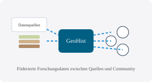

GeoHist verstehen
GeoHist ist ein webbasiertes Research- und Publikationstool, das heterogene Forschungsdaten zur historischen Rohstoffnutzung aus unterschiedlichen Datenservices miteinander verbindet und nach FAIR-Prinzipien zugänglich macht.
Zielgruppen
- Forschende aus Archäologie, Archäometallurgie, Geowissenschaften und Geschichte.
- Lehrende und Studierende, die mit digitalen Forschungsdaten und Karten arbeiten.
- Interessierte Laien, etwa aus Bergbauvereinen und Citizen-Science-Projekten.
GeoHist im Datenökosystem
GeoHist verknüpft eigene Datenbestände mit etablierten Forschungsdateninfrastrukturen wie ARIADNE, iDAI.gazetteer, Mindat, MRDS oder PANGAEA und schafft damit eine fächerübergreifende Sicht auf Fundstellen, Lagerstätten, Proben und Analysedaten.
FAIR und Open Science
GeoHist orientiert sich an den FAIR-Prinzipien (Findable, Accessible, Interoperable, Reusable) und unterstützt Open-Science-Publikationen durch DOIs, standardisierte Metadaten und transparente Review-Prozesse.